Логические элементы
Логическими элементами называются элементы, выполняющие логические операции и комбинации этих операций. Электронные логические элементы входят в состав цифровых микросхем. В одном корпусе микросхемы может содержаться несколько независимых элементов. Имея в распоряжении логические элементы можно сконструировать цифровое электронное устройство различной сложности.
Отсюда следует, что для построения логического устройства любой сложности достаточно иметь однотипные логические элементы, например, "И-НЕ" или "ИЛИ-НЕ".
Логические элементы могут работать в режимах положительной и отрицательной логики. Для электронных логических элементов в режиме положительной логики логической единице соответствует высокий уровень напряжения, а логическому нулю - низкий уровень напряжения. В режиме отрицательной логики логической единице соответствует низкий уровень напряжения, а логическому нулю - высокий.
Логические элементы, реализующие для режима положительной логики операцию "И", для режима отрицательной логики выполняют операцию "ИЛИ", и наоборот. Так, например, микросхема, реализующая для положительной логики функции элемента "2И-НЕ", будет выполнять для отрицательной логики функции элемента "2ИЛИ-НЕ". Число перед названием логического элемента показывает количество входов.
Как правило, паспортное обозначение логического элемента соответствует функции, реализуемой "положительной логикой". Логические элементы И, ИЛИ, НЕ имеют один выход, число входов логических элементов И, ИЛИ может быть любым начиная с двух. Логические элементы И и ИЛИ, выпускаемые в составе микросхем, обычно имеют 2, 3, 4, 8 входов. В названии элемента первая цифра указывает число входов.
Логический элемент "НЕ"
Логический элемент "НЕ", выполняющий функцию инверсии (отрицания), имеет один вход и один выход. Он меняет уровень сигнала на противоположный: если на входе элемента сигнал логической единицы, то на выходе элемента сигнал логического нуля и наоборот (табл. 1).
Таблица 1
| Вход X | Выход Y |
|---|---|
| 0 | 1 |
| 1 | 0 |
Условное графическое обозначение логического элеменат "НЕ" приведена на рисунке 1.
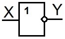 |
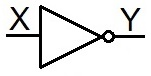 |
| а) | б) |
Рис. 1 - Условное графическое обозначение логического элемента "НЕ" ("NOT")
а) - отечественное, б) - зарубежное
Обратите внимание на кружочек на выходах – это символ инверсии.
Логический элемент "И"
Логический элемент "И" выполняет операцию логического умножения. На выходе логического элемента "И" будет логическая единица, если на всех входах будут сигналы логической единицы, и на выходе будет логический нуль, если хотя бы на одном из входов элемента будет сигнал логического нуля (табл. 2).
Таблица 2
| Входы | Выход | |
|---|---|---|
| X1 | X2 | Y |
| 0 | 0 | 0 |
| 1 | 0 | 0 |
| 0 | 1 | 0 |
| 1 | 1 | 1 |
Обозначение логического элемента "2И" на принципиальных схемах показано на рисунке 2. Знак & (амперсант) в левом верхнем углу прямоугольника указывает, что это логический элемент И.
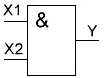 |
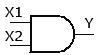 |
| а) | б) |
Рис. 2 - Условное графическое обозначение логического элемента "И" ("AND")
а) - отечественное, б) - зарубежное
Логический элемент "ИЛИ"
Логический элемент "ИЛИ" ("OR") выполняет логическую операцию логического сложения Y=X1+X2. Сигнал на выходе элемента "ИЛИ" будет логической единицей при наличии логической единицы хотя бы на одном входе. Две единицы так же дадут единицу на выходе.
Таблица 3
| Входы | Выход | |
|---|---|---|
| X1 | X2 | Y |
| 0 | 0 | 0 |
| 1 | 0 | 1 |
| 0 | 1 | 1 |
| 1 | 1 | 1 |
Условное графическое обозначение логического элемента "ИЛИ" приведена на рисунке 3.
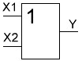 |
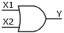 |
| а) | б) |
Рис. 3 - Условное графическое обозначение логического элемента "ИЛИ"
а) - отечественное, б) - зарубежное
Логический элемент "И-НЕ"
Логический элемент "И-НЕ" ("NAND") представляет собой элемент "И" выходной сигнал которого инвертируется ("НЕ") (рис. 4).
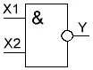 |
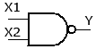 |
| а) | б) |
Рис. 4 - Условное графическое обозначение логического элемента "И-НЕ"
а) - отечественное, б) - зарубежное
Таблица 4
| Входы | Выход | |
|---|---|---|
| X1 | X2 | Y |
| 0 | 0 | 1 |
| 1 | 0 | 1 |
| 0 | 1 | 1 |
| 1 | 1 | 0 |
В таблице истинности элемента "И–НЕ" мы видим, что благодаря инвертору получается картина противоположная элементу «И». В отличие от трёх нулей и одной единицы мы имеем три единицы и ноль. Элемент «И–НЕ» часто называют элементом Шеффера.
Логический элемент "ИЛИ-НЕ"
Логический элемент "ИЛИ-НЕ" ("NOR") представляет собой элемент "И" выходной сигнал которого инвертируется ("НЕ") (рис. 5). Мы имеем только один высокий потенциал на выходе, обусловленный подачей на оба входа одновременно низкого потенциала. Таблица истинности так же отличается от схемы "ИЛИ" применением инвертирования выходного сигнала.
Таблица 5
| Входы | Выход | |
|---|---|---|
| X1 | X2 | Y |
| 0 | 0 | 1 |
| 1 | 0 | 0 |
| 0 | 1 | 0 |
| 1 | 1 | 0 |
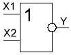 |
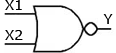 |
| а) | б) |
Рис. 5 - Условное графическое обозначение логического элемента "ИЛИ-НЕ"
а) - отечественное, б) - зарубежное
Логический элемент "Исключающее ИЛИ"
К числу базовых логических элементов принято относить элемент реализующий функцию «Исключающее ИЛИ» ("XOR"). Иначе эта функция называется «неравнозначность».
Высокий потенциал на выходе возникает только в том случае, если входные сигналы не равны. То есть на одном из входов должна быть единица, а на другом ноль. Если на выходе логического элемента имеется инвертор, то функция выполняется противоположная – «равнозначность». Высокий потенциал на выходе будет появляться при одинаковых сигналах на обоих входах. Эти логические элементы находят своё применение в сумматорах.
Таблица 6
| Входы | Выход | |
|---|---|---|
| X1 | X2 | Y |
| 0 | 0 | 0 |
| 1 | 0 | 1 |
| 0 | 1 | 1 |
| 1 | 1 | 0 |
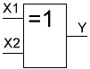 |
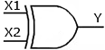 |
| а) | б) |
Рис. 6 - Условное графическое обозначение логического элемента "Исключающее ИЛИ"
а) - отечественное, б) - зарубежное
Логические элементы, которые выполняют базовые логические функции очень часто, используются элементы, объединённые в различных сочетаниях. Например, К555ЛР4. Она называется 2-4И-2ИЛИ-НЕ.
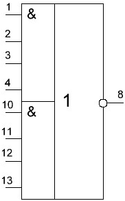
Рис. 7 - Условное обозначение микросхемы К555ЛР4